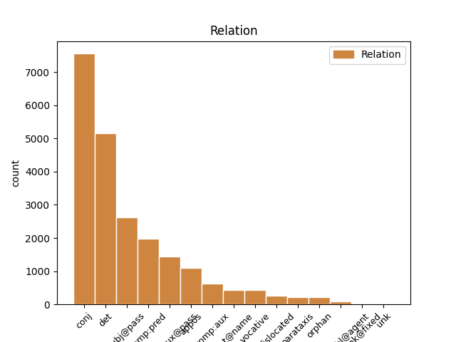
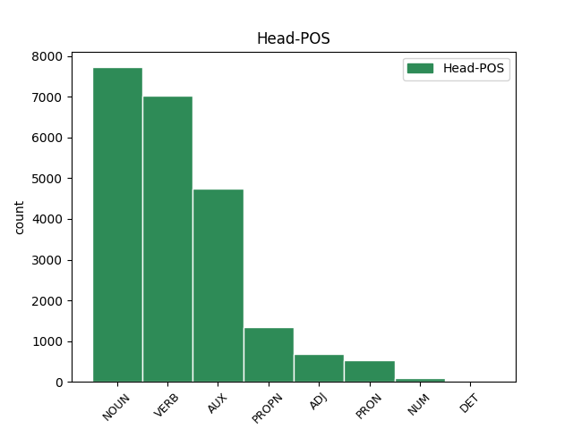
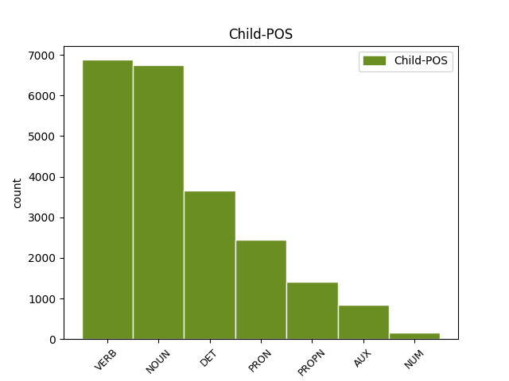

Distribution of features within this leaf



Agreement Rules sorted by frequency.
- When the dependent token is the determiner(det) of the head token, and the dependent token is DET.
1 Sed _ _ _ _ 0 _ _ _
2 ut _ _ _ _ 0 _ _ _
3 ad _ _ _ _ 0 _ _ _
4 urendum _ _ _ _ 0 _ _ _
5 et _ _ _ _ 0 _ _ _
6 secandum _ _ _ _ 0 _ _ _
7 sic _ _ _ _ 0 _ _ _
8 ad _ _ _ _ 0 _ _ _
9 hoc _ _ _ _ 0 _ _ _
10 genus _ _ _ _ 0 _ _ _
11 castigandi _ _ _ _ 0 _ _ _
12 raro _ _ _ _ 0 _ _ _
13 inviti _ _ _ _ 0 _ _ _
14 que _ _ _ _ 0 _ _ _
15 veniemus _ _ _ _ 0 _ _ _
16 ne _ _ _ _ 0 _ _ _
17 c _ _ _ _ 0 _ _ _
18 umquam _ _ _ _ 0 _ _ _
19 nisi _ _ _ _ 0 _ _ _
20 necessario _ _ _ _ 0 _ _ _
21 si _ _ _ _ 0 _ _ _
22 nulla _ _ _ _ 0 _ _ _
23 reperietur _ _ _ _ 0 _ _ _
24 alia alius DET Px Case=Nom|Gender=Fem|Number=Sing 25 det _ ref=1.136
25 medicina medicina NOUN Nb Case=Nom|Gender=Fem|Number=Sing 0 _ _ _
1 ne _ _ _ _ 0 _ _ _
2 c _ _ _ _ 0 _ _ _
3 vero _ _ _ _ 0 _ _ _
4 tamquam _ _ _ _ 0 _ _ _
5 in _ _ _ _ 0 _ _ _
6 possessionem _ _ _ _ 0 _ _ _
7 suam _ _ _ _ 0 _ _ _
8 venerit _ _ _ _ 0 _ _ _
9 excludat excludo VERB V- Mood=Sub|Number=Sing|Person=3|Tense=Pres|VerbForm=Fin|Voice=Act 0 _ _ _
10 alios _ _ _ _ 0 _ _ _
11 sed _ _ _ _ 0 _ _ _
12 cum _ _ _ _ 0 _ _ _
13 reliquis _ _ _ _ 0 _ _ _
14 in _ _ _ _ 0 _ _ _
15 rebus _ _ _ _ 0 _ _ _
16 tum _ _ _ _ 0 _ _ _
17 in _ _ _ _ 0 _ _ _
18 sermone _ _ _ _ 0 _ _ _
19 communi _ _ _ _ 0 _ _ _
20 vicissitudinem _ _ _ _ 0 _ _ _
21 non _ _ _ _ 0 _ _ _
22 iniquam _ _ _ _ 0 _ _ _
23 putet puto VERB V- Mood=Sub|Number=Sing|Person=3|Tense=Pres|VerbForm=Fin|Voice=Act 9 conj _ ref=1.134
1 Obiurgationes _ _ _ _ 0 _ _ _
2 etiam _ _ _ _ 0 _ _ _
3 non _ _ _ _ 0 _ _ _
4 numquam _ _ _ _ 0 _ _ _
5 incidunt _ _ _ _ 0 _ _ _
6 necessariae _ _ _ _ 0 _ _ _
7 in _ _ _ _ 0 _ _ _
8 quibus _ _ _ _ 0 _ _ _
9 utendum _ _ _ _ 0 _ _ _
10 est _ _ _ _ 0 _ _ _
11 fortasse _ _ _ _ 0 _ _ _
12 et _ _ _ _ 0 _ _ _
13 vocis _ _ _ _ 0 _ _ _
14 contentione contentio NOUN Nb Case=Abl|Gender=Fem|Number=Sing 0 _ _ _
15 maiore _ _ _ _ 0 _ _ _
16 et _ _ _ _ 0 _ _ _
17 verborum _ _ _ _ 0 _ _ _
18 gravitate gravitas NOUN Nb Case=Abl|Gender=Fem|Number=Sing 14 conj _ ref=1.136
19 acriore _ _ _ _ 0 _ _ _
20 id _ _ _ _ 0 _ _ _
21 agendum _ _ _ _ 0 _ _ _
22 etiam _ _ _ _ 0 _ _ _
23 ut _ _ _ _ 0 _ _ _
24 ea _ _ _ _ 0 _ _ _
25 facere _ _ _ _ 0 _ _ _
26 videamur _ _ _ _ 0 _ _ _
27 irati _ _ _ _ 0 _ _ _
1 Sed _ _ _ _ 0 _ _ _
2 ut _ _ _ _ 0 _ _ _
3 ad _ _ _ _ 0 _ _ _
4 urendum _ _ _ _ 0 _ _ _
5 et _ _ _ _ 0 _ _ _
6 secandum _ _ _ _ 0 _ _ _
7 sic _ _ _ _ 0 _ _ _
8 ad _ _ _ _ 0 _ _ _
9 hoc _ _ _ _ 0 _ _ _
10 genus _ _ _ _ 0 _ _ _
11 castigandi _ _ _ _ 0 _ _ _
12 raro _ _ _ _ 0 _ _ _
13 inviti _ _ _ _ 0 _ _ _
14 que _ _ _ _ 0 _ _ _
15 veniemus _ _ _ _ 0 _ _ _
16 ne _ _ _ _ 0 _ _ _
17 c _ _ _ _ 0 _ _ _
18 umquam _ _ _ _ 0 _ _ _
19 nisi _ _ _ _ 0 _ _ _
20 necessario _ _ _ _ 0 _ _ _
21 si _ _ _ _ 0 _ _ _
22 nulla _ _ _ _ 0 _ _ _
23 reperietur reperio VERB V- Mood=Ind|Number=Sing|Person=3|Tense=Fut|VerbForm=Fin|Voice=Pass 0 _ _ _
24 alia _ _ _ _ 0 _ _ _
25 medicina medicina NOUN Nb Case=Nom|Gender=Fem|Number=Sing 23 subj@pass _ ref=1.136
1 quarum _ _ _ _ 0 _ _ _
2 una _ _ _ _ 0 _ _ _
3 communis _ _ _ _ 0 _ _ _
4 est _ _ _ _ 0 _ _ _
5 ex _ _ _ _ 0 _ _ _
6 eo _ _ _ _ 0 _ _ _
7 quod _ _ _ _ 0 _ _ _
8 omnes _ _ _ _ 0 _ _ _
9 participes _ _ _ _ 0 _ _ _
10 sumus _ _ _ _ 0 _ _ _
11 rationis _ _ _ _ 0 _ _ _
12 praestantiae _ _ _ _ 0 _ _ _
13 que _ _ _ _ 0 _ _ _
14 eius _ _ _ _ 0 _ _ _
15 qua _ _ _ _ 0 _ _ _
16 antecellimus _ _ _ _ 0 _ _ _
17 bestiis _ _ _ _ 0 _ _ _
18 a _ _ _ _ 0 _ _ _
19 qua _ _ _ _ 0 _ _ _
20 omne _ _ _ _ 0 _ _ _
21 honestum _ _ _ _ 0 _ _ _
22 decorum _ _ _ _ 0 _ _ _
23 que _ _ _ _ 0 _ _ _
24 trahitur _ _ _ _ 0 _ _ _
25 et _ _ _ _ 0 _ _ _
26 ex _ _ _ _ 0 _ _ _
27 qua _ _ _ _ 0 _ _ _
28 ratio _ _ _ _ 0 _ _ _
29 inveniendi _ _ _ _ 0 _ _ _
30 officii _ _ _ _ 0 _ _ _
31 exquiritur _ _ _ _ 0 _ _ _
32 altera _ _ _ _ 0 _ _ _
33 autem _ _ _ _ 0 _ _ _
34 quae _ _ _ _ 0 _ _ _
35 proprie _ _ _ _ 0 _ _ _
36 singulis _ _ _ _ 0 _ _ _
37 est sum AUX V- Mood=Ind|Number=Sing|Person=3|Tense=Pres|VerbForm=Fin|Voice=Act 0 _ _ _
38 tributa tribuo VERB V- Aspect=Perf|Case=Nom|Gender=Fem|Number=Sing|Tense=Past|VerbForm=Part|Voice=Pass 37 comp:aux@pass _ ref=1.107
1 ac _ _ _ _ 0 _ _ _
2 videat _ _ _ _ 0 _ _ _
3 in _ _ _ _ 0 _ _ _
4 primis _ _ _ _ 0 _ _ _
5 quibus qui PRON Pr Case=Abl|Number=Plur|PronType=Rel 7 det _ ref=1.134
6 de _ _ _ _ 0 _ _ _
7 rebus res NOUN Nb Case=Abl|Gender=Fem|Number=Plur 0 _ _ _
8 loquatur _ _ _ _ 0 _ _ _
1 Quam _ _ _ _ 0 _ _ _
2 multa _ _ _ _ 0 _ _ _
3 passus _ _ _ _ 0 _ _ _
4 est _ _ _ _ 0 _ _ _
5 Ulixes _ _ _ _ 0 _ _ _
6 in _ _ _ _ 0 _ _ _
7 illo _ _ _ _ 0 _ _ _
8 errore _ _ _ _ 0 _ _ _
9 diuturno _ _ _ _ 0 _ _ _
10 cum _ _ _ _ 0 _ _ _
11 et _ _ _ _ 0 _ _ _
12 mulieribus _ _ _ _ 0 _ _ _
13 si _ _ _ _ 0 _ _ _
14 Circe _ _ _ _ 0 _ _ _
15 et _ _ _ _ 0 _ _ _
16 Calypso _ _ _ _ 0 _ _ _
17 mulieres mulier NOUN Nb Case=Nom|Gender=Fem|Number=Plur 18 comp:pred _ ref=1.113
18 appellandae appello VERB V- Case=Nom|Gender=Fem|Number=Plur|VerbForm=Gdv 0 _ _ _
19 sunt _ _ _ _ 0 _ _ _
20 inserviret _ _ _ _ 0 _ _ _
21 et _ _ _ _ 0 _ _ _
22 in _ _ _ _ 0 _ _ _
23 omni _ _ _ _ 0 _ _ _
24 sermone _ _ _ _ 0 _ _ _
25 omnibus _ _ _ _ 0 _ _ _
26 affabilem _ _ _ _ 0 _ _ _
27 esse _ _ _ _ 0 _ _ _
28 se _ _ _ _ 0 _ _ _
29 vellet _ _ _ _ 0 _ _ _
1 Sic _ _ _ _ 0 _ _ _
2 enim _ _ _ _ 0 _ _ _
3 est _ _ _ _ 0 _ _ _
4 faciendum _ _ _ _ 0 _ _ _
5 ut _ _ _ _ 0 _ _ _
6 contra _ _ _ _ 0 _ _ _
7 universam _ _ _ _ 0 _ _ _
8 naturam _ _ _ _ 0 _ _ _
9 nihil _ _ _ _ 0 _ _ _
10 contendamus _ _ _ _ 0 _ _ _
11 ea is PRON Pp Case=Abl|Gender=Fem|Number=Sing|Person=3|PronType=Prs 13 subj@pass _ ref=1.110
12 tamen _ _ _ _ 0 _ _ _
13 conservata conservo VERB V- Aspect=Perf|Case=Abl|Gender=Fem|Number=Sing|Tense=Past|VerbForm=Part|Voice=Pass 0 _ _ _
14 propriam _ _ _ _ 0 _ _ _
15 nostram _ _ _ _ 0 _ _ _
16 sequamur _ _ _ _ 0 _ _ _
17 ut _ _ _ _ 0 _ _ _
18 etiamsi _ _ _ _ 0 _ _ _
19 sint _ _ _ _ 0 _ _ _
20 alia _ _ _ _ 0 _ _ _
21 graviora _ _ _ _ 0 _ _ _
22 atque _ _ _ _ 0 _ _ _
23 meliora _ _ _ _ 0 _ _ _
24 tamen _ _ _ _ 0 _ _ _
25 nos _ _ _ _ 0 _ _ _
26 studia _ _ _ _ 0 _ _ _
27 nostra _ _ _ _ 0 _ _ _
28 nostrae _ _ _ _ 0 _ _ _
29 naturae _ _ _ _ 0 _ _ _
30 regula _ _ _ _ 0 _ _ _
31 metiamur _ _ _ _ 0 _ _ _
1 at _ _ _ _ 0 _ _ _
2 isdem _ _ _ _ 0 _ _ _
3 temporibus _ _ _ _ 0 _ _ _
4 in _ _ _ _ 0 _ _ _
5 Marco _ _ _ _ 0 _ _ _
6 Scauro _ _ _ _ 0 _ _ _
7 et _ _ _ _ 0 _ _ _
8 in _ _ _ _ 0 _ _ _
9 Marco Marcus PROPN Ne Case=Abl|Gender=Masc|Number=Sing 0 _ _ _
10 Druso _ _ _ _ 0 _ _ _
11 adulescente adulescens NOUN Nb Case=Abl|Gender=Masc|Number=Sing 9 appos _ ref=1.108
12 singularis _ _ _ _ 0 _ _ _
13 severitas _ _ _ _ 0 _ _ _
14 in _ _ _ _ 0 _ _ _
15 Gaio _ _ _ _ 0 _ _ _
16 Laelio _ _ _ _ 0 _ _ _
17 multa _ _ _ _ 0 _ _ _
18 hilaritas _ _ _ _ 0 _ _ _
19 in _ _ _ _ 0 _ _ _
20 eius _ _ _ _ 0 _ _ _
21 familiari _ _ _ _ 0 _ _ _
22 Scipione _ _ _ _ 0 _ _ _
23 ambitio _ _ _ _ 0 _ _ _
24 maior _ _ _ _ 0 _ _ _
25 vita _ _ _ _ 0 _ _ _
26 tristior _ _ _ _ 0 _ _ _
1 Danda do VERB V- Case=Nom|Gender=Fem|Number=Sing|VerbForm=Gdv 4 comp:aux _ ref=1.135
2 igitur _ _ _ _ 0 _ _ _
3 opera _ _ _ _ 0 _ _ _
4 est sum AUX V- Mood=Ind|Number=Sing|Person=3|Tense=Pres|VerbForm=Fin|Voice=Act 0 _ _ _
5 ut _ _ _ _ 0 _ _ _
6 etiamsi _ _ _ _ 0 _ _ _
7 aberrare _ _ _ _ 0 _ _ _
8 ad _ _ _ _ 0 _ _ _
9 alia _ _ _ _ 0 _ _ _
10 coeperit _ _ _ _ 0 _ _ _
11 ad _ _ _ _ 0 _ _ _
12 haec _ _ _ _ 0 _ _ _
13 revocetur _ _ _ _ 0 _ _ _
14 oratio _ _ _ _ 0 _ _ _
15 sed _ _ _ _ 0 _ _ _
16 utcumque _ _ _ _ 0 _ _ _
17 aderunt _ _ _ _ 0 _ _ _
1 Obiurgationes _ _ _ _ 0 _ _ _
2 etiam _ _ _ _ 0 _ _ _
3 non _ _ _ _ 0 _ _ _
4 numquam _ _ _ _ 0 _ _ _
5 incidunt _ _ _ _ 0 _ _ _
6 necessariae _ _ _ _ 0 _ _ _
7 in _ _ _ _ 0 _ _ _
8 quibus _ _ _ _ 0 _ _ _
9 utendum utor VERB V- Case=Nom|Gender=Neut|Number=Sing|VerbForm=Gdv 10 comp:pred _ ref=1.136
10 est sum AUX V- Mood=Ind|Number=Sing|Person=3|Tense=Pres|VerbForm=Fin|Voice=Act 0 _ _ _
11 fortasse _ _ _ _ 0 _ _ _
12 et _ _ _ _ 0 _ _ _
13 vocis _ _ _ _ 0 _ _ _
14 contentione _ _ _ _ 0 _ _ _
15 maiore _ _ _ _ 0 _ _ _
16 et _ _ _ _ 0 _ _ _
17 verborum _ _ _ _ 0 _ _ _
18 gravitate _ _ _ _ 0 _ _ _
19 acriore _ _ _ _ 0 _ _ _
20 id _ _ _ _ 0 _ _ _
21 agendum _ _ _ _ 0 _ _ _
22 etiam _ _ _ _ 0 _ _ _
23 ut _ _ _ _ 0 _ _ _
24 ea _ _ _ _ 0 _ _ _
25 facere _ _ _ _ 0 _ _ _
26 videamur _ _ _ _ 0 _ _ _
27 irati _ _ _ _ 0 _ _ _
1 Uberior _ _ _ _ 0 _ _ _
2 oratio _ _ _ _ 0 _ _ _
3 L Lucius PROPN Ne Case=Gen|Gender=Masc|Number=Sing 0 _ _ _
4 Crassi Crassus PROPN Ne Case=Gen|Gender=Masc|Number=Sing 3 flat@name _ ref=1.133
5 ne _ _ _ _ 0 _ _ _
6 c _ _ _ _ 0 _ _ _
7 minus _ _ _ _ 0 _ _ _
8 faceta _ _ _ _ 0 _ _ _
9 sed _ _ _ _ 0 _ _ _
10 bene _ _ _ _ 0 _ _ _
11 loquendi _ _ _ _ 0 _ _ _
12 de _ _ _ _ 0 _ _ _
13 Catulis _ _ _ _ 0 _ _ _
14 opinio _ _ _ _ 0 _ _ _
15 non _ _ _ _ 0 _ _ _
16 minor _ _ _ _ 0 _ _ _
1 Animadvertendum _ _ _ _ 0 _ _ _
2 est _ _ _ _ 0 _ _ _
3 etiam _ _ _ _ 0 _ _ _
4 quatenus _ _ _ _ 0 _ _ _
5 sermo _ _ _ _ 0 _ _ _
6 delectationem _ _ _ _ 0 _ _ _
7 habeat habeo VERB V- Mood=Sub|Number=Sing|Person=3|Tense=Pres|VerbForm=Fin|Voice=Act 0 _ _ _
8 et _ _ _ _ 0 _ _ _
9 ut _ _ _ _ 0 _ _ _
10 incipiendi _ _ _ _ 0 _ _ _
11 ratio _ _ _ _ 0 _ _ _
12 fuerit _ _ _ _ 0 _ _ _
13 ita _ _ _ _ 0 _ _ _
14 sit sum AUX V- Mood=Sub|Number=Sing|Person=3|Tense=Pres|VerbForm=Fin|Voice=Act 7 conj _ ref=1.135
15 desinendi _ _ _ _ 0 _ _ _
16 modus _ _ _ _ 0 _ _ _
1 Quam _ _ _ _ 0 _ _ _
2 multa _ _ _ _ 0 _ _ _
3 passus _ _ _ _ 0 _ _ _
4 est _ _ _ _ 0 _ _ _
5 Ulixes _ _ _ _ 0 _ _ _
6 in _ _ _ _ 0 _ _ _
7 illo _ _ _ _ 0 _ _ _
8 errore _ _ _ _ 0 _ _ _
9 diuturno _ _ _ _ 0 _ _ _
10 cum _ _ _ _ 0 _ _ _
11 et _ _ _ _ 0 _ _ _
12 mulieribus _ _ _ _ 0 _ _ _
13 si _ _ _ _ 0 _ _ _
14 Circe Circe PROPN Ne Case=Nom|Gender=Fem|Number=Sing 0 _ _ _
15 et _ _ _ _ 0 _ _ _
16 Calypso Calypso PROPN Ne Case=Nom|Gender=Masc|Number=Sing 14 conj _ ref=1.113
17 mulieres _ _ _ _ 0 _ _ _
18 appellandae _ _ _ _ 0 _ _ _
19 sunt _ _ _ _ 0 _ _ _
20 inserviret _ _ _ _ 0 _ _ _
21 et _ _ _ _ 0 _ _ _
22 in _ _ _ _ 0 _ _ _
23 omni _ _ _ _ 0 _ _ _
24 sermone _ _ _ _ 0 _ _ _
25 omnibus _ _ _ _ 0 _ _ _
26 affabilem _ _ _ _ 0 _ _ _
27 esse _ _ _ _ 0 _ _ _
28 se _ _ _ _ 0 _ _ _
29 vellet _ _ _ _ 0 _ _ _
1 o _ _ _ _ 0 _ _ _
2 magnum _ _ _ _ 0 _ _ _
3 hominem homo NOUN Nb Case=Acc|Gender=Masc|Number=Sing 8 vocative _ ref=2.2.2
4 et _ _ _ _ 0 _ _ _
5 unde _ _ _ _ 0 _ _ _
6 multo _ _ _ _ 0 _ _ _
7 plura _ _ _ _ 0 _ _ _
8 didiceris disco VERB V- Aspect=Perf|Mood=Sub|Number=Sing|Person=2|Tense=Past|VerbForm=Fin|Voice=Act 0 _ _ _
9 quam _ _ _ _ 0 _ _ _
10 de _ _ _ _ 0 _ _ _
11 Procilio _ _ _ _ 0 _ _ _
1 at _ _ _ _ 0 _ _ _
2 isdem _ _ _ _ 0 _ _ _
3 temporibus _ _ _ _ 0 _ _ _
4 in _ _ _ _ 0 _ _ _
5 Marco _ _ _ _ 0 _ _ _
6 Scauro _ _ _ _ 0 _ _ _
7 et _ _ _ _ 0 _ _ _
8 in _ _ _ _ 0 _ _ _
9 Marco _ _ _ _ 0 _ _ _
10 Druso _ _ _ _ 0 _ _ _
11 adulescente _ _ _ _ 0 _ _ _
12 singularis _ _ _ _ 0 _ _ _
13 severitas _ _ _ _ 0 _ _ _
14 in _ _ _ _ 0 _ _ _
15 Gaio _ _ _ _ 0 _ _ _
16 Laelio _ _ _ _ 0 _ _ _
17 multa _ _ _ _ 0 _ _ _
18 hilaritas _ _ _ _ 0 _ _ _
19 in _ _ _ _ 0 _ _ _
20 eius _ _ _ _ 0 _ _ _
21 familiari familiaris NOUN Nb Case=Abl|Gender=Masc|Number=Sing 0 _ _ _
22 Scipione Scipio PROPN Ne Case=Abl|Gender=Masc|Number=Sing 21 appos _ ref=1.108
23 ambitio _ _ _ _ 0 _ _ _
24 maior _ _ _ _ 0 _ _ _
25 vita _ _ _ _ 0 _ _ _
26 tristior _ _ _ _ 0 _ _ _
1 Quo _ _ _ _ 0 _ _ _
2 in _ _ _ _ 0 _ _ _
3 genere _ _ _ _ 0 _ _ _
4 versutissimum _ _ _ _ 0 _ _ _
5 et _ _ _ _ 0 _ _ _
6 patientissimum _ _ _ _ 0 _ _ _
7 Lacedaemonium _ _ _ _ 0 _ _ _
8 Lysandrum _ _ _ _ 0 _ _ _
9 accepimus _ _ _ _ 0 _ _ _
10 contra _ _ _ _ 0 _ _ _
11 que _ _ _ _ 0 _ _ _
12 Callicratidam Callicratidas PROPN Ne Case=Acc|Gender=Masc|Number=Sing 0 _ _ _
13 qui _ _ _ _ 0 _ _ _
14 praefectus _ _ _ _ 0 _ _ _
15 classis _ _ _ _ 0 _ _ _
16 proximus _ _ _ _ 0 _ _ _
17 post _ _ _ _ 0 _ _ _
18 Lysandrum _ _ _ _ 0 _ _ _
19 fuit sum AUX V- Aspect=Perf|Mood=Ind|Number=Sing|Person=3|Tense=Past|VerbForm=Fin|Voice=Act 12 appos _ ref=1.109
1 Ex _ _ _ _ 0 _ _ _
2 quo _ _ _ _ 0 _ _ _
3 magis _ _ _ _ 0 _ _ _
4 emergit _ _ _ _ 0 _ _ _
5 quale qualis PRON Pi Case=Nom|Gender=Neut|Number=Sing|PronType=Int 6 comp:pred _ ref=1.110
6 sit sum AUX V- Mood=Sub|Number=Sing|Person=3|Tense=Pres|VerbForm=Fin|Voice=Act 0 _ _ _
7 decorum _ _ _ _ 0 _ _ _
8 illud _ _ _ _ 0 _ _ _
9 ideo _ _ _ _ 0 _ _ _
10 quia _ _ _ _ 0 _ _ _
11 nihil _ _ _ _ 0 _ _ _
12 decet _ _ _ _ 0 _ _ _
13 invita _ _ _ _ 0 _ _ _
14 Minerva _ _ _ _ 0 _ _ _
15 ut _ _ _ _ 0 _ _ _
16 aiunt _ _ _ _ 0 _ _ _
17 id _ _ _ _ 0 _ _ _
18 est _ _ _ _ 0 _ _ _
19 adversante _ _ _ _ 0 _ _ _
20 et _ _ _ _ 0 _ _ _
21 repugnante _ _ _ _ 0 _ _ _
22 natura _ _ _ _ 0 _ _ _
1 Mihi ego PRON Pp Case=Dat|Gender=Masc|Number=Sing|Person=1|PronType=Prs 0 _ _ _
2 quidem _ _ _ _ 0 _ _ _
3 ne _ _ _ _ 0 _ _ _
4 que _ _ _ _ 0 _ _ _
5 pueris _ _ _ _ 0 _ _ _
6 nobis _ _ _ _ 0 _ _ _
7 Marcus _ _ _ _ 0 _ _ _
8 Scaurus _ _ _ _ 0 _ _ _
9 Gaio Gaius PROPN Ne Case=Dat|Gender=Masc|Number=Sing 1 comp:pred _ ref=1.76
10 Mario _ _ _ _ 0 _ _ _
11 ne _ _ _ _ 0 _ _ _
12 que _ _ _ _ 0 _ _ _
13 cum _ _ _ _ 0 _ _ _
14 versaremur _ _ _ _ 0 _ _ _
15 in _ _ _ _ 0 _ _ _
16 re _ _ _ _ 0 _ _ _
17 publica _ _ _ _ 0 _ _ _
18 Quintus _ _ _ _ 0 _ _ _
19 Catulus _ _ _ _ 0 _ _ _
20 Gnaeo _ _ _ _ 0 _ _ _
21 Pompeio _ _ _ _ 0 _ _ _
22 cedere _ _ _ _ 0 _ _ _
23 videbatur _ _ _ _ 0 _ _ _
1 Ut _ _ _ _ 0 _ _ _
2 enim _ _ _ _ 0 _ _ _
3 sermone _ _ _ _ 0 _ _ _
4 eo _ _ _ _ 0 _ _ _
5 debemus debeo VERB V- Mood=Ind|Number=Plur|Person=1|Tense=Pres|VerbForm=Fin|Voice=Act 29 dislocated _ ref=1.111
6 uti _ _ _ _ 0 _ _ _
7 qui _ _ _ _ 0 _ _ _
8 innatus _ _ _ _ 0 _ _ _
9 est _ _ _ _ 0 _ _ _
10 nobis _ _ _ _ 0 _ _ _
11 ne _ _ _ _ 0 _ _ _
12 ut _ _ _ _ 0 _ _ _
13 quidam _ _ _ _ 0 _ _ _
14 Graeca _ _ _ _ 0 _ _ _
15 verba _ _ _ _ 0 _ _ _
16 inculcantes _ _ _ _ 0 _ _ _
17 iure _ _ _ _ 0 _ _ _
18 optimo _ _ _ _ 0 _ _ _
19 rideamur _ _ _ _ 0 _ _ _
20 sic _ _ _ _ 0 _ _ _
21 in _ _ _ _ 0 _ _ _
22 actiones _ _ _ _ 0 _ _ _
23 omnem _ _ _ _ 0 _ _ _
24 que _ _ _ _ 0 _ _ _
25 vitam _ _ _ _ 0 _ _ _
26 nullam _ _ _ _ 0 _ _ _
27 discrepantiam _ _ _ _ 0 _ _ _
28 conferre _ _ _ _ 0 _ _ _
29 debemus debeo VERB V- Mood=Ind|Number=Plur|Person=1|Tense=Pres|VerbForm=Fin|Voice=Act 0 _ _ _
1 Ut _ _ _ _ 0 _ _ _
2 enim _ _ _ _ 0 _ _ _
3 in _ _ _ _ 0 _ _ _
4 corporibus _ _ _ _ 0 _ _ _
5 magnae _ _ _ _ 0 _ _ _
6 dissimilitudines _ _ _ _ 0 _ _ _
7 sunt _ _ _ _ 0 _ _ _
8 alios _ _ _ _ 0 _ _ _
9 videmus video VERB V- Mood=Ind|Number=Plur|Person=1|Tense=Pres|VerbForm=Fin|Voice=Act 29 parataxis _ ref=1.107
10 velocitate _ _ _ _ 0 _ _ _
11 ad _ _ _ _ 0 _ _ _
12 cursum _ _ _ _ 0 _ _ _
13 alios _ _ _ _ 0 _ _ _
14 viribus _ _ _ _ 0 _ _ _
15 ad _ _ _ _ 0 _ _ _
16 luctandum _ _ _ _ 0 _ _ _
17 valere _ _ _ _ 0 _ _ _
18 itemque _ _ _ _ 0 _ _ _
19 in _ _ _ _ 0 _ _ _
20 formis _ _ _ _ 0 _ _ _
21 aliis _ _ _ _ 0 _ _ _
22 dignitatem _ _ _ _ 0 _ _ _
23 inesse _ _ _ _ 0 _ _ _
24 aliis _ _ _ _ 0 _ _ _
25 venustatem _ _ _ _ 0 _ _ _
26 sic _ _ _ _ 0 _ _ _
27 in _ _ _ _ 0 _ _ _
28 animis _ _ _ _ 0 _ _ _
29 exsistunt exsisto VERB V- Mood=Ind|Number=Plur|Person=3|Tense=Pres|VerbForm=Fin|Voice=Act 0 _ _ _
30 maiores _ _ _ _ 0 _ _ _
31 etiam _ _ _ _ 0 _ _ _
32 varietates _ _ _ _ 0 _ _ _
1 Panaetius _ _ _ _ 0 _ _ _
2 quidem _ _ _ _ 0 _ _ _
3 Africanum Africanus PROPN Ne Case=Acc|Gender=Masc|Number=Sing 8 subj@pass _ ref=1.90
4 auditorem _ _ _ _ 0 _ _ _
5 et _ _ _ _ 0 _ _ _
6 familiarem _ _ _ _ 0 _ _ _
7 suum _ _ _ _ 0 _ _ _
8 solitum soleo VERB V- Aspect=Perf|Case=Acc|Gender=Masc|Number=Sing|Tense=Past|VerbForm=Part|Voice=Pass 0 _ _ _
9 ait _ _ _ _ 0 _ _ _
10 dicere _ _ _ _ 0 _ _ _
11 ut _ _ _ _ 0 _ _ _
12 equos _ _ _ _ 0 _ _ _
13 propter _ _ _ _ 0 _ _ _
14 crebras _ _ _ _ 0 _ _ _
15 contentiones _ _ _ _ 0 _ _ _
16 proeliorum _ _ _ _ 0 _ _ _
17 ferocitate _ _ _ _ 0 _ _ _
18 exsultantes _ _ _ _ 0 _ _ _
19 domitoribus _ _ _ _ 0 _ _ _
20 tradere _ _ _ _ 0 _ _ _
21 soleant _ _ _ _ 0 _ _ _
22 ut _ _ _ _ 0 _ _ _
23 iis _ _ _ _ 0 _ _ _
24 facilioribus _ _ _ _ 0 _ _ _
25 possint _ _ _ _ 0 _ _ _
26 uti _ _ _ _ 0 _ _ _
27 sic _ _ _ _ 0 _ _ _
28 homines _ _ _ _ 0 _ _ _
29 secundis _ _ _ _ 0 _ _ _
30 rebus _ _ _ _ 0 _ _ _
31 effrenatos _ _ _ _ 0 _ _ _
32 sibi _ _ _ _ 0 _ _ _
33 que _ _ _ _ 0 _ _ _
34 praefidentes _ _ _ _ 0 _ _ _
35 tamquam _ _ _ _ 0 _ _ _
36 in _ _ _ _ 0 _ _ _
37 gyrum _ _ _ _ 0 _ _ _
38 rationis _ _ _ _ 0 _ _ _
39 et _ _ _ _ 0 _ _ _
40 doctrinae _ _ _ _ 0 _ _ _
41 duci _ _ _ _ 0 _ _ _
42 oportere _ _ _ _ 0 _ _ _
43 ut _ _ _ _ 0 _ _ _
44 perspicerent _ _ _ _ 0 _ _ _
45 rerum _ _ _ _ 0 _ _ _
46 humanarum _ _ _ _ 0 _ _ _
47 imbecillitatem _ _ _ _ 0 _ _ _
48 varietatem _ _ _ _ 0 _ _ _
49 que _ _ _ _ 0 _ _ _
50 fortunae _ _ _ _ 0 _ _ _
1 itaque _ _ _ _ 0 _ _ _
2 alter _ _ _ _ 0 _ _ _
3 semper _ _ _ _ 0 _ _ _
4 magnus _ _ _ _ 0 _ _ _
5 alter _ _ _ _ 0 _ _ _
6 saepe _ _ _ _ 0 _ _ _
7 turpissimus _ _ _ _ 0 _ _ _
8 ut _ _ _ _ 0 _ _ _
9 recte _ _ _ _ 0 _ _ _
10 praecipere _ _ _ _ 0 _ _ _
11 videantur video VERB V- Mood=Sub|Number=Plur|Person=3|Tense=Pres|VerbForm=Fin|Voice=Pass 0 _ _ _
12 qui _ _ _ _ 0 _ _ _
13 monent moneo VERB V- Mood=Ind|Number=Plur|Person=3|Tense=Pres|VerbForm=Fin|Voice=Act 11 subj@pass _ ref=1.90
14 ut _ _ _ _ 0 _ _ _
15 quanto _ _ _ _ 0 _ _ _
16 superiores _ _ _ _ 0 _ _ _
17 simus _ _ _ _ 0 _ _ _
18 tanto _ _ _ _ 0 _ _ _
19 nos _ _ _ _ 0 _ _ _
20 geramus _ _ _ _ 0 _ _ _
21 summissius _ _ _ _ 0 _ _ _
1 Licet _ _ _ _ 0 _ _ _
2 ora _ _ _ _ 0 _ _ _
3 ipsa _ _ _ _ 0 _ _ _
4 cernere _ _ _ _ 0 _ _ _
5 iratorum iratus ADJ A- Case=Gen|Degree=Pos|Gender=Masc|Number=Plur 0 _ _ _
6 aut _ _ _ _ 0 _ _ _
7 eorum is PRON Pp Case=Gen|Gender=Masc|Number=Plur|Person=3|PronType=Prs 5 conj _ ref=1.102
8 qui _ _ _ _ 0 _ _ _
9 aut _ _ _ _ 0 _ _ _
10 libidine _ _ _ _ 0 _ _ _
11 aliqua _ _ _ _ 0 _ _ _
12 aut _ _ _ _ 0 _ _ _
13 metu _ _ _ _ 0 _ _ _
14 commoti _ _ _ _ 0 _ _ _
15 sunt _ _ _ _ 0 _ _ _
16 aut _ _ _ _ 0 _ _ _
17 voluptate _ _ _ _ 0 _ _ _
18 nimia _ _ _ _ 0 _ _ _
19 gestiunt _ _ _ _ 0 _ _ _
1 licet licet VERB V- Mood=Ind|Number=Sing|Person=3|Tense=Pres|VerbForm=Fin|Voice=Act 0 _ _ _
2 enim _ _ _ _ 0 _ _ _
3 mihi _ _ _ _ 0 _ _ _
4 Marce Marcus PROPN Ne Case=Voc|Gender=Masc|Number=Sing 1 vocative _ ref=1.78
5 fili _ _ _ _ 0 _ _ _
6 apud _ _ _ _ 0 _ _ _
7 te _ _ _ _ 0 _ _ _
8 gloriari _ _ _ _ 0 _ _ _
9 ad _ _ _ _ 0 _ _ _
10 quem _ _ _ _ 0 _ _ _
11 et _ _ _ _ 0 _ _ _
12 hereditas _ _ _ _ 0 _ _ _
13 huius _ _ _ _ 0 _ _ _
14 gloriae _ _ _ _ 0 _ _ _
15 et _ _ _ _ 0 _ _ _
16 factorum _ _ _ _ 0 _ _ _
17 imitatio _ _ _ _ 0 _ _ _
18 pertinet _ _ _ _ 0 _ _ _
1 quae _ _ _ _ 0 _ _ _
2 quidem _ _ _ _ 0 _ _ _
3 pleraque _ _ _ _ 0 _ _ _
4 iure _ _ _ _ 0 _ _ _
5 praetorio _ _ _ _ 0 _ _ _
6 liberantur _ _ _ _ 0 _ _ _
7 non nonnullus ADJ A- Case=Nom|Degree=Pos|Gender=Neut|Number=Plur 0 _ _ _
8 nulla _ _ _ _ 0 _ _ _
9 legibus lex NOUN Nb Case=Abl|Gender=Fem|Number=Plur 7 orphan _ ref=1.32
1 in _ _ _ _ 0 _ _ _
2 quibus _ _ _ _ 0 _ _ _
3 enim _ _ _ _ 0 _ _ _
4 eadem _ _ _ _ 0 _ _ _
5 studia _ _ _ _ 0 _ _ _
6 sunt sum AUX V- Mood=Ind|Number=Plur|Person=3|Tense=Pres|VerbForm=Fin|Voice=Act 10 det _ ref=1.56
7 eaedem _ _ _ _ 0 _ _ _
8 voluntates _ _ _ _ 0 _ _ _
9 in _ _ _ _ 0 _ _ _
10 iis is PRON Pp Case=Abl|Gender=Masc|Number=Plur|Person=3|PronType=Prs 0 _ _ _
11 fit _ _ _ _ 0 _ _ _
12 ut _ _ _ _ 0 _ _ _
13 aeque _ _ _ _ 0 _ _ _
14 quisque _ _ _ _ 0 _ _ _
15 altero _ _ _ _ 0 _ _ _
16 delectetur _ _ _ _ 0 _ _ _
17 ac _ _ _ _ 0 _ _ _
18 se _ _ _ _ 0 _ _ _
19 ipso _ _ _ _ 0 _ _ _
20 efficitur _ _ _ _ 0 _ _ _
21 que _ _ _ _ 0 _ _ _
22 id _ _ _ _ 0 _ _ _
23 quod _ _ _ _ 0 _ _ _
24 Pythagoras _ _ _ _ 0 _ _ _
25 vult _ _ _ _ 0 _ _ _
26 in _ _ _ _ 0 _ _ _
27 amicitia _ _ _ _ 0 _ _ _
28 ut _ _ _ _ 0 _ _ _
29 unus _ _ _ _ 0 _ _ _
30 fiat _ _ _ _ 0 _ _ _
31 ex _ _ _ _ 0 _ _ _
32 pluribus _ _ _ _ 0 _ _ _
1 Sunt _ _ _ _ 0 _ _ _
2 his _ _ _ _ 0 _ _ _
3 alii _ _ _ _ 0 _ _ _
4 multum _ _ _ _ 0 _ _ _
5 dispares _ _ _ _ 0 _ _ _
6 simplices _ _ _ _ 0 _ _ _
7 et _ _ _ _ 0 _ _ _
8 aperti _ _ _ _ 0 _ _ _
9 qui _ _ _ _ 0 _ _ _
10 nihil nihil ADJ Px Case=Acc|Gender=Neut|Number=Sing 0 _ _ _
11 ex _ _ _ _ 0 _ _ _
12 occulto _ _ _ _ 0 _ _ _
13 nihil _ _ _ _ 0 _ _ _
14 de _ _ _ _ 0 _ _ _
15 insidiis _ _ _ _ 0 _ _ _
16 agendum ago VERB V- Case=Acc|Gender=Neut|Number=Sing|VerbForm=Gdv 10 orphan _ ref=1.109
17 putant _ _ _ _ 0 _ _ _
18 veritatis _ _ _ _ 0 _ _ _
19 cultores _ _ _ _ 0 _ _ _
20 fraudis _ _ _ _ 0 _ _ _
21 inimici _ _ _ _ 0 _ _ _
22 item _ _ _ _ 0 _ _ _
23 que _ _ _ _ 0 _ _ _
24 alii _ _ _ _ 0 _ _ _
25 qui _ _ _ _ 0 _ _ _
26 quidvis _ _ _ _ 0 _ _ _
27 perpetiantur _ _ _ _ 0 _ _ _
28 cuivis _ _ _ _ 0 _ _ _
29 deserviant _ _ _ _ 0 _ _ _
30 dum _ _ _ _ 0 _ _ _
31 quod _ _ _ _ 0 _ _ _
32 velint _ _ _ _ 0 _ _ _
33 consequantur _ _ _ _ 0 _ _ _
34 ut _ _ _ _ 0 _ _ _
35 Sullam _ _ _ _ 0 _ _ _
36 et _ _ _ _ 0 _ _ _
37 Marcum _ _ _ _ 0 _ _ _
38 Crassum _ _ _ _ 0 _ _ _
39 videbamus _ _ _ _ 0 _ _ _
1 sin _ _ _ _ 0 _ _ _
2 sit _ _ _ _ 0 _ _ _
3 quispiam _ _ _ _ 0 _ _ _
4 qui _ _ _ _ 0 _ _ _
5 aliquid _ _ _ _ 0 _ _ _
6 tribuat _ _ _ _ 0 _ _ _
7 voluptati _ _ _ _ 0 _ _ _
8 diligenter _ _ _ _ 0 _ _ _
9 ei is PRON Pp Case=Dat|Gender=Masc|Number=Sing|Person=3|PronType=Prs 10 comp:obl@agent _ ref=1.106
10 tenendum teneo VERB V- Case=Acc|Gender=Neut|Number=Sing|VerbForm=Gdv 0 _ _ _
11 esse _ _ _ _ 0 _ _ _
12 eius _ _ _ _ 0 _ _ _
13 fruendae _ _ _ _ 0 _ _ _
14 modum _ _ _ _ 0 _ _ _
1 His _ _ _ _ 0 _ _ _
2 igitur _ _ _ _ 0 _ _ _
3 expositis _ _ _ _ 0 _ _ _
4 quale _ _ _ _ 0 _ _ _
5 sit sum AUX V- Mood=Sub|Number=Sing|Person=3|Tense=Pres|VerbForm=Fin|Voice=Act 10 subj@pass _ ref=1.99
6 id _ _ _ _ 0 _ _ _
7 quod _ _ _ _ 0 _ _ _
8 decere _ _ _ _ 0 _ _ _
9 dicimus _ _ _ _ 0 _ _ _
10 intellectum intellego VERB V- Aspect=Perf|Case=Acc|Gender=Neut|Number=Sing|Tense=Past|VerbForm=Part|Voice=Pass 0 _ _ _
11 puto _ _ _ _ 0 _ _ _
1 sed _ _ _ _ 0 _ _ _
2 ex _ _ _ _ 0 _ _ _
3 iis _ _ _ _ 0 _ _ _
4 onerariae _ _ _ _ 0 _ _ _
5 duae _ _ _ _ 0 _ _ _
6 eosdem _ _ _ _ 0 _ _ _
7 portus _ _ _ _ 0 _ _ _
8 quos qui PRON Pr Case=Acc|Gender=Masc|Number=Plur|PronType=Rel 9 orphan _ ref=4.36.4
9 reliquae reliquus ADJ A- Case=Nom|Degree=Pos|Gender=Fem|Number=Plur 0 _ _ _
10 capere _ _ _ _ 0 _ _ _
11 non _ _ _ _ 0 _ _ _
12 potuerunt _ _ _ _ 0 _ _ _
13 et _ _ _ _ 0 _ _ _
14 paulo _ _ _ _ 0 _ _ _
15 infra _ _ _ _ 0 _ _ _
16 delatae _ _ _ _ 0 _ _ _
17 sunt _ _ _ _ 0 _ _ _
1 Animadvertendum _ _ _ _ 0 _ _ _
2 est _ _ _ _ 0 _ _ _
3 etiam _ _ _ _ 0 _ _ _
4 quatenus _ _ _ _ 0 _ _ _
5 sermo _ _ _ _ 0 _ _ _
6 delectationem _ _ _ _ 0 _ _ _
7 habeat _ _ _ _ 0 _ _ _
8 et _ _ _ _ 0 _ _ _
9 ut _ _ _ _ 0 _ _ _
10 incipiendi _ _ _ _ 0 _ _ _
11 ratio _ _ _ _ 0 _ _ _
12 fuerit sum AUX V- Aspect=Perf|Mood=Sub|Number=Sing|Person=3|Tense=Past|VerbForm=Fin|Voice=Act 14 dislocated _ ref=1.135
13 ita _ _ _ _ 0 _ _ _
14 sit sum AUX V- Mood=Sub|Number=Sing|Person=3|Tense=Pres|VerbForm=Fin|Voice=Act 0 _ _ _
15 desinendi _ _ _ _ 0 _ _ _
16 modus _ _ _ _ 0 _ _ _
1 Ex _ _ _ _ 0 _ _ _
2 quo _ _ _ _ 0 _ _ _
3 illud _ _ _ _ 0 _ _ _
4 Summum _ _ _ _ 0 _ _ _
5 ius _ _ _ _ 0 _ _ _
6 summa _ _ _ _ 0 _ _ _
7 iniuria iniuria NOUN Nb Case=Nom|Gender=Fem|Number=Sing 9 dislocated _ ref=1.33
8 factum _ _ _ _ 0 _ _ _
9 est sum AUX V- Mood=Ind|Number=Sing|Person=3|Tense=Pres|VerbForm=Fin|Voice=Act 0 _ _ _
10 iam _ _ _ _ 0 _ _ _
11 tritum _ _ _ _ 0 _ _ _
12 sermone _ _ _ _ 0 _ _ _
13 proverbium _ _ _ _ 0 _ _ _
1 Capessentibus _ _ _ _ 0 _ _ _
2 autem _ _ _ _ 0 _ _ _
3 rem _ _ _ _ 0 _ _ _
4 publicam _ _ _ _ 0 _ _ _
5 nihilo _ _ _ _ 0 _ _ _
6 minus _ _ _ _ 0 _ _ _
7 quam _ _ _ _ 0 _ _ _
8 philosophis _ _ _ _ 0 _ _ _
9 haud _ _ _ _ 0 _ _ _
10 scio _ _ _ _ 0 _ _ _
11 an _ _ _ _ 0 _ _ _
12 magis _ _ _ _ 0 _ _ _
13 etiam _ _ _ _ 0 _ _ _
14 et _ _ _ _ 0 _ _ _
15 magnificentia _ _ _ _ 0 _ _ _
16 et _ _ _ _ 0 _ _ _
17 despicientia _ _ _ _ 0 _ _ _
18 adhibenda _ _ _ _ 0 _ _ _
19 est _ _ _ _ 0 _ _ _
20 rerum _ _ _ _ 0 _ _ _
21 humanarum _ _ _ _ 0 _ _ _
22 quam _ _ _ _ 0 _ _ _
23 saepe _ _ _ _ 0 _ _ _
24 dico _ _ _ _ 0 _ _ _
25 et _ _ _ _ 0 _ _ _
26 tranquillitas _ _ _ _ 0 _ _ _
27 animi _ _ _ _ 0 _ _ _
28 atque _ _ _ _ 0 _ _ _
29 securitas _ _ _ _ 0 _ _ _
30 siquidem _ _ _ _ 0 _ _ _
31 ne _ _ _ _ 0 _ _ _
32 c _ _ _ _ 0 _ _ _
33 anxii _ _ _ _ 0 _ _ _
34 futuri sum AUX V- Case=Nom|Gender=Masc|Number=Plur|Tense=Fut|VerbForm=Part|Voice=Act 35 comp:aux _ ref=1.72
35 sunt sum AUX V- Mood=Ind|Number=Plur|Person=3|Tense=Pres|VerbForm=Fin|Voice=Act 0 _ _ _
36 et _ _ _ _ 0 _ _ _
37 cum _ _ _ _ 0 _ _ _
38 gravitate _ _ _ _ 0 _ _ _
39 constantia _ _ _ _ 0 _ _ _
40 que _ _ _ _ 0 _ _ _
41 victuri _ _ _ _ 0 _ _ _
1 quarum _ _ _ _ 0 _ _ _
2 una unus NUM Ma Case=Nom|Gender=Fem|Number=Sing 3 comp:pred _ ref=6.9.1
3 erat sum AUX V- Aspect=Imp|Mood=Ind|Number=Sing|Person=3|Tense=Past|VerbForm=Fin|Voice=Act 0 _ _ _
4 quod _ _ _ _ 0 _ _ _
5 auxilia _ _ _ _ 0 _ _ _
6 contra _ _ _ _ 0 _ _ _
7 se _ _ _ _ 0 _ _ _
8 Treveris _ _ _ _ 0 _ _ _
9 miserant _ _ _ _ 0 _ _ _
1 Ab _ _ _ _ 0 _ _ _
2 iis _ _ _ _ 0 _ _ _
3 qui _ _ _ _ 0 _ _ _
4 emerant _ _ _ _ 0 _ _ _
5 capitum _ _ _ _ 0 _ _ _
6 numerus _ _ _ _ 0 _ _ _
7 ad _ _ _ _ 0 _ _ _
8 eum _ _ _ _ 0 _ _ _
9 relatus _ _ _ _ 0 _ _ _
10 est _ _ _ _ 0 _ _ _
11 milium _ _ _ _ 0 _ _ _
12 quinquaginta quinquaginta NUM Ma Case=Gen|Number=Plur 0 _ _ _
13 trium trium NUM Ma Case=Gen|Number=Plur 12 unk@fixed _ ref=2.33.7
1 Provinciae _ _ _ _ 0 _ _ _
2 toti _ _ _ _ 0 _ _ _
3 quam _ _ _ _ 0 _ _ _
4 maximum _ _ _ _ 0 _ _ _
5 potest _ _ _ _ 0 _ _ _
6 militum _ _ _ _ 0 _ _ _
7 numerum _ _ _ _ 0 _ _ _
8 imperat impero VERB V- Mood=Ind|Number=Sing|Person=3|Tense=Pres|VerbForm=Fin|Voice=Act 0 _ _ _
9 erat sum AUX V- Aspect=Imp|Mood=Ind|Number=Sing|Person=3|Tense=Past|VerbForm=Fin|Voice=Act 8 parataxis _ ref=1.7.2
10 omnino _ _ _ _ 0 _ _ _
11 in _ _ _ _ 0 _ _ _
12 Gallia _ _ _ _ 0 _ _ _
13 ulteriore _ _ _ _ 0 _ _ _
14 legio _ _ _ _ 0 _ _ _
15 una _ _ _ _ 0 _ _ _
16 pontem _ _ _ _ 0 _ _ _
17 qui _ _ _ _ 0 _ _ _
18 erat _ _ _ _ 0 _ _ _
19 ad _ _ _ _ 0 _ _ _
20 Genavam _ _ _ _ 0 _ _ _
21 iubet _ _ _ _ 0 _ _ _
22 rescindi _ _ _ _ 0 _ _ _
1 Praesidio _ _ _ _ 0 _ _ _
2 impedimentis _ _ _ _ 0 _ _ _
3 legionem legio NOUN Nb Case=Acc|Gender=Fem|Number=Sing 0 _ _ _
4 quartamdecimam _ _ _ _ 0 _ _ _
5 reliquit _ _ _ _ 0 _ _ _
6 unam unus NUM Ma Case=Acc|Gender=Fem|Number=Sing 3 appos _ ref=6.32.5
7 ex _ _ _ _ 0 _ _ _
8 eis _ _ _ _ 0 _ _ _
9 quas _ _ _ _ 0 _ _ _
10 proxime _ _ _ _ 0 _ _ _
11 conscriptas _ _ _ _ 0 _ _ _
12 ex _ _ _ _ 0 _ _ _
13 Italia _ _ _ _ 0 _ _ _
14 traduxerat _ _ _ _ 0 _ _ _
1 His _ _ _ _ 0 _ _ _
2 idem idem DET Pd Case=Nom|Gender=Masc|Number=Sing 0 _ _ _
3 propositum _ _ _ _ 0 _ _ _
4 fuit _ _ _ _ 0 _ _ _
5 quod qui PRON Pr Case=Nom|Gender=Neut|Number=Sing|PronType=Rel 2 appos _ ref=1.70
6 regibus _ _ _ _ 0 _ _ _
7 ut _ _ _ _ 0 _ _ _
8 ne _ _ _ _ 0 _ _ _
9 qua _ _ _ _ 0 _ _ _
10 re _ _ _ _ 0 _ _ _
11 egerent _ _ _ _ 0 _ _ _
12 ne _ _ _ _ 0 _ _ _
13 cui _ _ _ _ 0 _ _ _
14 parerent _ _ _ _ 0 _ _ _
15 libertate _ _ _ _ 0 _ _ _
16 uterentur _ _ _ _ 0 _ _ _
17 cuius _ _ _ _ 0 _ _ _
18 proprium _ _ _ _ 0 _ _ _
19 est _ _ _ _ 0 _ _ _
20 sic _ _ _ _ 0 _ _ _
21 vivere _ _ _ _ 0 _ _ _
22 ut _ _ _ _ 0 _ _ _
23 velis _ _ _ _ 0 _ _ _
1 summa _ _ _ _ 0 _ _ _
2 erat _ _ _ _ 0 _ _ _
3 capitum _ _ _ _ 0 _ _ _
4 Helvetiorum _ _ _ _ 0 _ _ _
5 milium _ _ _ _ 0 _ _ _
6 ducentorum _ _ _ _ 0 _ _ _
7 sexaginta _ _ _ _ 0 _ _ _
8 trium _ _ _ _ 0 _ _ _
9 Tulingorum _ _ _ _ 0 _ _ _
10 milium _ _ _ _ 0 _ _ _
11 triginta _ _ _ _ 0 _ _ _
12 sex _ _ _ _ 0 _ _ _
13 Latobrigorum _ _ _ _ 0 _ _ _
14 quattuordecim _ _ _ _ 0 _ _ _
15 Rauracorum _ _ _ _ 0 _ _ _
16 viginti viginti NUM Ma Case=Gen|Gender=Neut|Number=Plur 0 _ _ _
17 trium _ _ _ _ 0 _ _ _
18 Boiorum _ _ _ _ 0 _ _ _
19 triginta triginta NUM Ma Case=Gen|Gender=Neut|Number=Plur 16 conj _ ref=1.29.2
20 duorum _ _ _ _ 0 _ _ _
1 Omnino _ _ _ _ 0 _ _ _
2 fortis _ _ _ _ 0 _ _ _
3 animus _ _ _ _ 0 _ _ _
4 et _ _ _ _ 0 _ _ _
5 magnus _ _ _ _ 0 _ _ _
6 duabus _ _ _ _ 0 _ _ _
7 rebus _ _ _ _ 0 _ _ _
8 maxime _ _ _ _ 0 _ _ _
9 cernitur _ _ _ _ 0 _ _ _
10 quarum _ _ _ _ 0 _ _ _
11 una unus NUM Ma Case=Nom|Gender=Fem|Number=Sing 16 subj@pass _ ref=1.66
12 in _ _ _ _ 0 _ _ _
13 rerum _ _ _ _ 0 _ _ _
14 externarum _ _ _ _ 0 _ _ _
15 despicientia _ _ _ _ 0 _ _ _
16 ponitur pono VERB V- Mood=Ind|Number=Sing|Person=3|Tense=Pres|VerbForm=Fin|Voice=Pass 0 _ _ _
17 cum _ _ _ _ 0 _ _ _
18 persuasum _ _ _ _ 0 _ _ _
19 est _ _ _ _ 0 _ _ _
20 nihil _ _ _ _ 0 _ _ _
21 hominem _ _ _ _ 0 _ _ _
22 nisi _ _ _ _ 0 _ _ _
23 quod _ _ _ _ 0 _ _ _
24 honestum _ _ _ _ 0 _ _ _
25 decorum _ _ _ _ 0 _ _ _
26 que _ _ _ _ 0 _ _ _
27 sit _ _ _ _ 0 _ _ _
28 aut _ _ _ _ 0 _ _ _
29 admirari _ _ _ _ 0 _ _ _
30 aut _ _ _ _ 0 _ _ _
31 optare _ _ _ _ 0 _ _ _
32 aut _ _ _ _ 0 _ _ _
33 expetere _ _ _ _ 0 _ _ _
34 oportere _ _ _ _ 0 _ _ _
35 nulli _ _ _ _ 0 _ _ _
36 que _ _ _ _ 0 _ _ _
37 ne _ _ _ _ 0 _ _ _
38 que _ _ _ _ 0 _ _ _
39 homini _ _ _ _ 0 _ _ _
40 ne _ _ _ _ 0 _ _ _
41 que _ _ _ _ 0 _ _ _
42 perturbationi _ _ _ _ 0 _ _ _
43 animi _ _ _ _ 0 _ _ _
44 ne _ _ _ _ 0 _ _ _
45 c _ _ _ _ 0 _ _ _
46 fortunae _ _ _ _ 0 _ _ _
47 succumbere _ _ _ _ 0 _ _ _
1 Pro _ _ _ _ 0 _ _ _
2 multitudine _ _ _ _ 0 _ _ _
3 autem _ _ _ _ 0 _ _ _
4 hominum _ _ _ _ 0 _ _ _
5 et _ _ _ _ 0 _ _ _
6 pro _ _ _ _ 0 _ _ _
7 gloria _ _ _ _ 0 _ _ _
8 belli _ _ _ _ 0 _ _ _
9 atque _ _ _ _ 0 _ _ _
10 fortitudinis _ _ _ _ 0 _ _ _
11 angustos _ _ _ _ 0 _ _ _
12 se _ _ _ _ 0 _ _ _
13 fines _ _ _ _ 0 _ _ _
14 habere _ _ _ _ 0 _ _ _
15 arbitrabantur _ _ _ _ 0 _ _ _
16 qui qui PRON Pr Case=Nom|Gender=Masc|Number=Plur|PronType=Rel 0 _ _ _
17 in _ _ _ _ 0 _ _ _
18 longitudinem _ _ _ _ 0 _ _ _
19 milia mille NUM Ma Case=Acc|Gender=Neut|Number=Plur 16 orphan _ ref=1.2.6
20 passuum _ _ _ _ 0 _ _ _
21 ducenta _ _ _ _ 0 _ _ _
22 quadraginta _ _ _ _ 0 _ _ _
23 in _ _ _ _ 0 _ _ _
24 latitudinem _ _ _ _ 0 _ _ _
25 centum _ _ _ _ 0 _ _ _
26 octoginta _ _ _ _ 0 _ _ _
27 patebant _ _ _ _ 0 _ _ _
1 Nemo _ _ _ _ 0 _ _ _
2 est _ _ _ _ 0 _ _ _
3 tam _ _ _ _ 0 _ _ _
4 fortis _ _ _ _ 0 _ _ _
5 quin _ _ _ _ 0 _ _ _
6 rei _ _ _ _ 0 _ _ _
7 novitate novitas NOUN Nb Case=Abl|Gender=Fem|Number=Sing 8 comp:obl@agent _ ref=6.39.2
8 perturbetur perturbo VERB V- Mood=Sub|Number=Sing|Person=3|Tense=Pres|VerbForm=Fin|Voice=Pass 0 _ _ _
1 Itaque _ _ _ _ 0 _ _ _
2 eorum _ _ _ _ 0 _ _ _
3 consilio _ _ _ _ 0 _ _ _
4 saepe _ _ _ _ 0 _ _ _
5 aut _ _ _ _ 0 _ _ _
6 non _ _ _ _ 0 _ _ _
7 suscepta _ _ _ _ 0 _ _ _
8 aut _ _ _ _ 0 _ _ _
9 confecta _ _ _ _ 0 _ _ _
10 bella _ _ _ _ 0 _ _ _
11 sunt _ _ _ _ 0 _ _ _
12 non _ _ _ _ 0 _ _ _
13 numquam _ _ _ _ 0 _ _ _
14 etiam _ _ _ _ 0 _ _ _
15 illata _ _ _ _ 0 _ _ _
16 ut _ _ _ _ 0 _ _ _
17 Marci Marcus PROPN Ne Case=Gen|Gender=Masc|Number=Sing 19 orphan _ ref=1.79
18 Catonis _ _ _ _ 0 _ _ _
19 bellum bellum NOUN Nb Case=Nom|Gender=Neut|Number=Sing 0 _ _ _
20 tertium _ _ _ _ 0 _ _ _
21 Punicum _ _ _ _ 0 _ _ _
22 in _ _ _ _ 0 _ _ _
23 quo _ _ _ _ 0 _ _ _
24 etiam _ _ _ _ 0 _ _ _
25 mortui _ _ _ _ 0 _ _ _
26 valuit _ _ _ _ 0 _ _ _
27 auctoritas _ _ _ _ 0 _ _ _
1 gratias _ _ _ _ 0 _ _ _
2 agimus _ _ _ _ 0 _ _ _
3 Deo _ _ _ _ 0 _ _ _
4 et _ _ _ _ 0 _ _ _
5 Patri _ _ _ _ 0 _ _ _
6 Domini _ _ _ _ 0 _ _ _
7 nostri _ _ _ _ 0 _ _ _
8 Iesu _ _ _ _ 0 _ _ _
9 Christi _ _ _ _ 0 _ _ _
10 semper _ _ _ _ 0 _ _ _
11 pro _ _ _ _ 0 _ _ _
12 vobis _ _ _ _ 0 _ _ _
13 orantes _ _ _ _ 0 _ _ _
14 audientes _ _ _ _ 0 _ _ _
15 fidem _ _ _ _ 0 _ _ _
16 vestram _ _ _ _ 0 _ _ _
17 in _ _ _ _ 0 _ _ _
18 Christo _ _ _ _ 0 _ _ _
19 Iesu _ _ _ _ 0 _ _ _
20 et _ _ _ _ 0 _ _ _
21 dilectionem _ _ _ _ 0 _ _ _
22 quam _ _ _ _ 0 _ _ _
23 habetis _ _ _ _ 0 _ _ _
24 in _ _ _ _ 0 _ _ _
25 sanctos _ _ _ _ 0 _ _ _
26 omnes _ _ _ _ 0 _ _ _
27 propter _ _ _ _ 0 _ _ _
28 spem _ _ _ _ 0 _ _ _
29 quae _ _ _ _ 0 _ _ _
30 reposita _ _ _ _ 0 _ _ _
31 est _ _ _ _ 0 _ _ _
32 vobis _ _ _ _ 0 _ _ _
33 in _ _ _ _ 0 _ _ _
34 caelis _ _ _ _ 0 _ _ _
35 quam _ _ _ _ 0 _ _ _
36 audistis _ _ _ _ 0 _ _ _
37 in _ _ _ _ 0 _ _ _
38 verbo _ _ _ _ 0 _ _ _
39 veritatis _ _ _ _ 0 _ _ _
40 evangelii _ _ _ _ 0 _ _ _
41 quod _ _ _ _ 0 _ _ _
42 pervenit _ _ _ _ 0 _ _ _
43 ad _ _ _ _ 0 _ _ _
44 vos _ _ _ _ 0 _ _ _
45 sicut _ _ _ _ 0 _ _ _
46 et _ _ _ _ 0 _ _ _
47 in _ _ _ _ 0 _ _ _
48 universo _ _ _ _ 0 _ _ _
49 mundo _ _ _ _ 0 _ _ _
50 est _ _ _ _ 0 _ _ _
51 et _ _ _ _ 0 _ _ _
52 fructificat _ _ _ _ 0 _ _ _
53 et _ _ _ _ 0 _ _ _
54 crescit _ _ _ _ 0 _ _ _
55 sicut _ _ _ _ 0 _ _ _
56 in _ _ _ _ 0 _ _ _
57 vobis _ _ _ _ 0 _ _ _
58 ex _ _ _ _ 0 _ _ _
59 ea _ _ _ _ 0 _ _ _
60 die _ _ _ _ 0 _ _ _
61 qua _ _ _ _ 0 _ _ _
62 audistis _ _ _ _ 0 _ _ _
63 et _ _ _ _ 0 _ _ _
64 cognovistis _ _ _ _ 0 _ _ _
65 gratiam _ _ _ _ 0 _ _ _
66 Dei _ _ _ _ 0 _ _ _
67 in _ _ _ _ 0 _ _ _
68 veritate _ _ _ _ 0 _ _ _
69 sicut _ _ _ _ 0 _ _ _
70 didicistis _ _ _ _ 0 _ _ _
71 ab _ _ _ _ 0 _ _ _
72 Epaphra _ _ _ _ 0 _ _ _
73 carissimo _ _ _ _ 0 _ _ _
74 conservo _ _ _ _ 0 _ _ _
75 nostro _ _ _ _ 0 _ _ _
76 qui _ _ _ _ 0 _ _ _
77 est sum AUX V- Mood=Ind|Number=Sing|Person=3|Tense=Pres|VerbForm=Fin|Voice=Act 0 _ _ _
78 fidelis _ _ _ _ 0 _ _ _
79 pro _ _ _ _ 0 _ _ _
80 vobis _ _ _ _ 0 _ _ _
81 minister _ _ _ _ 0 _ _ _
82 Christi Christus PROPN Ne Case=Gen|Gender=Masc|Number=Sing 77 dislocated _ ref=COL_1.7
83 Iesu _ _ _ _ 0 _ _ _
84 qui _ _ _ _ 0 _ _ _
85 etiam _ _ _ _ 0 _ _ _
86 manifestavit _ _ _ _ 0 _ _ _
87 nobis _ _ _ _ 0 _ _ _
88 dilectionem _ _ _ _ 0 _ _ _
89 vestram _ _ _ _ 0 _ _ _
90 in _ _ _ _ 0 _ _ _
91 Spiritu _ _ _ _ 0 _ _ _
1 etsi _ _ _ _ 0 _ _ _
2 id _ _ _ _ 0 _ _ _
3 ipsum _ _ _ _ 0 _ _ _
4 scire _ _ _ _ 0 _ _ _
5 cupio _ _ _ _ 0 _ _ _
6 quod _ _ _ _ 0 _ _ _
7 ad _ _ _ _ 0 _ _ _
8 tempus _ _ _ _ 0 _ _ _
9 recte _ _ _ _ 0 _ _ _
10 ad _ _ _ _ 0 _ _ _
11 te _ _ _ _ 0 _ _ _
12 scribere _ _ _ _ 0 _ _ _
13 possim _ _ _ _ 0 _ _ _
14 id _ _ _ _ 0 _ _ _
15 est sum AUX V- Mood=Ind|Number=Sing|Person=3|Tense=Pres|VerbForm=Fin|Voice=Act 0 _ _ _
16 quam _ _ _ _ 0 _ _ _
17 diu _ _ _ _ 0 _ _ _
18 Romae _ _ _ _ 0 _ _ _
19 futurus sum AUX V- Case=Nom|Gender=Masc|Number=Sing|Tense=Fut|VerbForm=Part|Voice=Act 15 comp:pred _ ref=5.5.2
20 sis _ _ _ _ 0 _ _ _
21 ut _ _ _ _ 0 _ _ _
22 aut _ _ _ _ 0 _ _ _
23 quo _ _ _ _ 0 _ _ _
24 dem _ _ _ _ 0 _ _ _
25 posthac _ _ _ _ 0 _ _ _
26 litteras _ _ _ _ 0 _ _ _
27 sciam _ _ _ _ 0 _ _ _
28 aut _ _ _ _ 0 _ _ _
29 ne _ _ _ _ 0 _ _ _
30 dem _ _ _ _ 0 _ _ _
31 frustra _ _ _ _ 0 _ _ _
1 Ludo _ _ _ _ 0 _ _ _
2 autem _ _ _ _ 0 _ _ _
3 et _ _ _ _ 0 _ _ _
4 ioco _ _ _ _ 0 _ _ _
5 uti _ _ _ _ 0 _ _ _
6 illo _ _ _ _ 0 _ _ _
7 quidem _ _ _ _ 0 _ _ _
8 licet _ _ _ _ 0 _ _ _
9 sed _ _ _ _ 0 _ _ _
10 sicut _ _ _ _ 0 _ _ _
11 somno _ _ _ _ 0 _ _ _
12 et _ _ _ _ 0 _ _ _
13 quietibus _ _ _ _ 0 _ _ _
14 ceteris _ _ _ _ 0 _ _ _
15 tum _ _ _ _ 0 _ _ _
16 cum _ _ _ _ 0 _ _ _
17 gravibus _ _ _ _ 0 _ _ _
18 seriis _ _ _ _ 0 _ _ _
19 que _ _ _ _ 0 _ _ _
20 rebus _ _ _ _ 0 _ _ _
21 satis satisfacio VERB V- Aspect=Perf|Mood=Sub|Number=Plur|Person=1|Tense=Past|VerbForm=Fin|Voice=Act 0 _ _ _
22 fecerimus fecerimus VERB V- Aspect=Perf|Mood=Sub|Number=Plur|Person=1|Tense=Past|VerbForm=Fin|Voice=Act 21 unk@fixed _ ref=1.103
1 Sequitur _ _ _ _ 0 _ _ _
2 ut _ _ _ _ 0 _ _ _
3 de _ _ _ _ 0 _ _ _
4 una unus NUM Ma Case=Abl|Gender=Fem|Number=Sing 9 dislocated _ ref=1.93
5 reliqua _ _ _ _ 0 _ _ _
6 parte _ _ _ _ 0 _ _ _
7 honestatis _ _ _ _ 0 _ _ _
8 dicendum _ _ _ _ 0 _ _ _
9 sit sum AUX V- Mood=Sub|Number=Sing|Person=3|Tense=Pres|VerbForm=Fin|Voice=Act 0 _ _ _
10 in _ _ _ _ 0 _ _ _
11 qua _ _ _ _ 0 _ _ _
12 verecundia _ _ _ _ 0 _ _ _
13 et _ _ _ _ 0 _ _ _
14 quasi _ _ _ _ 0 _ _ _
15 quidam _ _ _ _ 0 _ _ _
16 ornatus _ _ _ _ 0 _ _ _
17 vitae _ _ _ _ 0 _ _ _
18 temperantia _ _ _ _ 0 _ _ _
19 et _ _ _ _ 0 _ _ _
20 modestia _ _ _ _ 0 _ _ _
21 omnis _ _ _ _ 0 _ _ _
22 que _ _ _ _ 0 _ _ _
23 sedatio _ _ _ _ 0 _ _ _
24 perturbationum _ _ _ _ 0 _ _ _
25 animi _ _ _ _ 0 _ _ _
26 et _ _ _ _ 0 _ _ _
27 rerum _ _ _ _ 0 _ _ _
28 modus _ _ _ _ 0 _ _ _
29 cernitur _ _ _ _ 0 _ _ _
1 de _ _ _ _ 0 _ _ _
2 Eutychide Eutychides PROPN Ne Case=Abl|Gender=Masc|Number=Sing 0 _ _ _
3 gratum _ _ _ _ 0 _ _ _
4 qui _ _ _ _ 0 _ _ _
5 vetere _ _ _ _ 0 _ _ _
6 praenomine _ _ _ _ 0 _ _ _
7 novo _ _ _ _ 0 _ _ _
8 nomine _ _ _ _ 0 _ _ _
9 Titus _ _ _ _ 0 _ _ _
10 erit sum AUX V- Mood=Ind|Number=Sing|Person=3|Tense=Fut|VerbForm=Fin|Voice=Act 2 flat@name _ ref=4.15.1
11 Caecilius _ _ _ _ 0 _ _ _
12 ut _ _ _ _ 0 _ _ _
13 est _ _ _ _ 0 _ _ _
14 ex _ _ _ _ 0 _ _ _
15 me _ _ _ _ 0 _ _ _
16 et _ _ _ _ 0 _ _ _
17 ex _ _ _ _ 0 _ _ _
18 te _ _ _ _ 0 _ _ _
19 iunctus _ _ _ _ 0 _ _ _
20 Dionysius _ _ _ _ 0 _ _ _
21 Marcus _ _ _ _ 0 _ _ _
22 Pomponius _ _ _ _ 0 _ _ _
1 illud _ _ _ _ 0 _ _ _
2 abs _ _ _ _ 0 _ _ _
3 te _ _ _ _ 0 _ _ _
4 peto _ _ _ _ 0 _ _ _
5 des _ _ _ _ 0 _ _ _
6 operam opera NOUN Nb Case=Acc|Gender=Fem|Number=Sing 0 _ _ _
7 id is PRON Pp Case=Acc|Gender=Neut|Number=Sing|Person=3|PronType=Prs 6 dislocated _ ref=3.25.1
8 quod _ _ _ _ 0 _ _ _
9 mihi _ _ _ _ 0 _ _ _
10 adfirmasti _ _ _ _ 0 _ _ _
11 ut _ _ _ _ 0 _ _ _
12 te _ _ _ _ 0 _ _ _
13 ante _ _ _ _ 0 _ _ _
14 Kalendas _ _ _ _ 0 _ _ _
15 Ianuarias _ _ _ _ 0 _ _ _
16 ubicumque _ _ _ _ 0 _ _ _
17 erimus _ _ _ _ 0 _ _ _
18 sistas _ _ _ _ 0 _ _ _
1 de _ _ _ _ 0 _ _ _
2 Messalla _ _ _ _ 0 _ _ _
3 ad _ _ _ _ 0 _ _ _
4 te _ _ _ _ 0 _ _ _
5 statim _ _ _ _ 0 _ _ _
6 ut _ _ _ _ 0 _ _ _
7 audivi _ _ _ _ 0 _ _ _
8 de _ _ _ _ 0 _ _ _
9 Gyaro _ _ _ _ 0 _ _ _
10 dedi do VERB V- Aspect=Perf|Mood=Ind|Number=Sing|Person=1|Tense=Past|VerbForm=Fin|Voice=Act 0 _ _ _
11 litteras _ _ _ _ 0 _ _ _
12 et _ _ _ _ 0 _ _ _
13 id _ _ _ _ 0 _ _ _
14 ipsum _ _ _ _ 0 _ _ _
15 consilium consilium NOUN Nb Case=Nom|Gender=Neut|Number=Sing 10 parataxis _ ref=5.12.2
16 nostrum _ _ _ _ 0 _ _ _
17 etiam _ _ _ _ 0 _ _ _
18 ad _ _ _ _ 0 _ _ _
19 Hortensium _ _ _ _ 0 _ _ _
20 cui _ _ _ _ 0 _ _ _
21 quidem _ _ _ _ 0 _ _ _
22 valde _ _ _ _ 0 _ _ _
23 συνηγωνίων _ _ _ _ 0 _ _ _
1 exspecta exspecto VERB V- Mood=Imp|Number=Sing|Person=2|Tense=Pres|VerbForm=Fin|Voice=Act 0 _ _ _
2 amabo amo VERB V- Mood=Ind|Number=Sing|Person=1|Tense=Fut|VerbForm=Fin|Voice=Act 1 vocative _ ref=7.1.4
3 te _ _ _ _ 0 _ _ _
4 dum _ _ _ _ 0 _ _ _
5 Atticum _ _ _ _ 0 _ _ _
6 conveniam _ _ _ _ 0 _ _ _
1 oboedistis _ _ _ _ 0 _ _ _
2 autem _ _ _ _ 0 _ _ _
3 ex _ _ _ _ 0 _ _ _
4 corde _ _ _ _ 0 _ _ _
5 in _ _ _ _ 0 _ _ _
6 eam _ _ _ _ 0 _ _ _
7 formam forma NOUN Nb Case=Acc|Gender=Fem|Number=Sing 0 _ _ _
8 doctrinae doctrina NOUN Nb Case=Gen|Gender=Fem|Number=Sing 7 unk _ ref=ROM_6.17
9 in _ _ _ _ 0 _ _ _
10 qua _ _ _ _ 0 _ _ _
11 traditi _ _ _ _ 0 _ _ _
12 estis _ _ _ _ 0 _ _ _
1 vixi _ _ _ _ 0 _ _ _
2 cum _ _ _ _ 0 _ _ _
3 Axio _ _ _ _ 0 _ _ _
4 qui _ _ _ _ 0 _ _ _
5 etiam _ _ _ _ 0 _ _ _
6 me _ _ _ _ 0 _ _ _
7 ad _ _ _ _ 0 _ _ _
8 Septem Septem PROPN Ne Case=Acc|Gender=Fem|Number=Plur 0 _ _ _
9 Aquas Aquae PROPN Ne Case=Acc|Gender=Fem|Number=Plur 8 unk@fixed _ ref=4.15.5
10 duxit _ _ _ _ 0 _ _ _
1 insipiens _ _ _ _ 0 _ _ _
2 tu tu PRON Pp Case=Voc|Gender=Masc|Number=Sing|Person=2|PronType=Prs 6 vocative _ ref=1COR_15.36
3 quod _ _ _ _ 0 _ _ _
4 seminas _ _ _ _ 0 _ _ _
5 non _ _ _ _ 0 _ _ _
6 vivificatur vivifico VERB V- Mood=Ind|Number=Sing|Person=3|Tense=Pres|VerbForm=Fin|Voice=Pass 0 _ _ _
7 nisi _ _ _ _ 0 _ _ _
8 prius _ _ _ _ 0 _ _ _
9 moriatur _ _ _ _ 0 _ _ _
1 amen _ _ _ _ 0 _ _ _
2 dico _ _ _ _ 0 _ _ _
3 vobis _ _ _ _ 0 _ _ _
4 quia _ _ _ _ 0 _ _ _
5 unus unus NUM Ma Case=Nom|Gender=Masc|Number=Sing 0 _ _ _
6 ex _ _ _ _ 0 _ _ _
7 vobis _ _ _ _ 0 _ _ _
8 me _ _ _ _ 0 _ _ _
9 tradet _ _ _ _ 0 _ _ _
10 qui _ _ _ _ 0 _ _ _
11 manducat manduco VERB V- Mood=Ind|Number=Sing|Person=3|Tense=Pres|VerbForm=Fin|Voice=Act 5 unk _ ref=MARK_14.18
12 me _ _ _ _ 0 _ _ _
13 cum _ _ _ _ 0 _ _ _
1 iustus _ _ _ _ 0 _ _ _
2 es sum AUX V- Mood=Ind|Number=Sing|Person=2|Tense=Pres|VerbForm=Fin|Voice=Act 0 _ _ _
3 qui _ _ _ _ 0 _ _ _
4 es sum AUX V- Mood=Ind|Number=Sing|Person=2|Tense=Pres|VerbForm=Fin|Voice=Act 2 vocative _ ref=REV_16.5
5 et _ _ _ _ 0 _ _ _
6 qui _ _ _ _ 0 _ _ _
7 eras _ _ _ _ 0 _ _ _
8 sanctus _ _ _ _ 0 _ _ _
9 quia _ _ _ _ 0 _ _ _
10 haec _ _ _ _ 0 _ _ _
11 iudicasti _ _ _ _ 0 _ _ _
12 quia _ _ _ _ 0 _ _ _
13 sanguinem _ _ _ _ 0 _ _ _
14 sanctorum _ _ _ _ 0 _ _ _
15 et _ _ _ _ 0 _ _ _
16 prophetarum _ _ _ _ 0 _ _ _
17 fuderunt _ _ _ _ 0 _ _ _
18 et _ _ _ _ 0 _ _ _
19 sanguinem _ _ _ _ 0 _ _ _
20 eis _ _ _ _ 0 _ _ _
21 dedisti _ _ _ _ 0 _ _ _
22 bibere _ _ _ _ 0 _ _ _
1 at _ _ _ _ 0 _ _ _
2 ille _ _ _ _ 0 _ _ _
3 dixit dico VERB V- Aspect=Perf|Mood=Ind|Number=Sing|Person=3|Tense=Past|VerbForm=Fin|Voice=Act 0 _ _ _
4 Legio Legio PROPN Ne Case=Nom|Gender=Masc|Number=Sing 3 parataxis _ ref=LUKE_8.30
5 quia _ _ _ _ 0 _ _ _
6 intraverunt _ _ _ _ 0 _ _ _
7 daemonia _ _ _ _ 0 _ _ _
8 multa _ _ _ _ 0 _ _ _
9 in _ _ _ _ 0 _ _ _
10 eum _ _ _ _ 0 _ _ _
1 nec _ _ _ _ 0 _ _ _
2 hercule _ _ _ _ 0 _ _ _
3 umquam _ _ _ _ 0 _ _ _
4 tam _ _ _ _ 0 _ _ _
5 diu _ _ _ _ 0 _ _ _
6 ignarus _ _ _ _ 0 _ _ _
7 rerum _ _ _ _ 0 _ _ _
8 mearum _ _ _ _ 0 _ _ _
9 fui _ _ _ _ 0 _ _ _
10 quid quis PRON Pi Case=Nom|Gender=Neut|Number=Sing|PronType=Int 0 _ _ _
11 de _ _ _ _ 0 _ _ _
12 Caesaris _ _ _ _ 0 _ _ _
13 quid _ _ _ _ 0 _ _ _
14 de _ _ _ _ 0 _ _ _
15 Milonis _ _ _ _ 0 _ _ _
16 nominibus _ _ _ _ 0 _ _ _
17 actum _ _ _ _ 0 _ _ _
18 sit sum AUX V- Mood=Sub|Number=Sing|Person=3|Tense=Pres|VerbForm=Fin|Voice=Act 10 orphan _ ref=5.10.4
Disagree Examples:
1 Iacob _ _ _ _ 0 _ _ _
2 autem _ _ _ _ 0 _ _ _
3 genuit _ _ _ _ 0 _ _ _
4 Iudam Iudas PROPN Ne Case=Acc|Gender=Masc|Number=Sing 0 _ _ _
5 et _ _ _ _ 0 _ _ _
6 fratres frater NOUN Nb Case=Acc|Gender=Masc|Number=Plur 4 conj _ ref=MATT_1.2
7 eius _ _ _ _ 0 _ _ _
1 Iacob _ _ _ _ 0 _ _ _
2 autem _ _ _ _ 0 _ _ _
3 genuit _ _ _ _ 0 _ _ _
4 Iudam _ _ _ _ 0 _ _ _
5 et _ _ _ _ 0 _ _ _
6 fratres frater NOUN Nb Case=Acc|Gender=Masc|Number=Plur 0 _ _ _
7 eius is PRON Pp Case=Gen|Gender=Masc|Number=Sing|Person=3|PronType=Prs 6 det _ ref=MATT_1.2
1 Iosias _ _ _ _ 0 _ _ _
2 autem _ _ _ _ 0 _ _ _
3 genuit _ _ _ _ 0 _ _ _
4 Iechoniam Iechonias PROPN Ne Case=Acc|Gender=Masc|Number=Sing 0 _ _ _
5 et _ _ _ _ 0 _ _ _
6 fratres frater NOUN Nb Case=Acc|Gender=Masc|Number=Plur 4 conj _ ref=MATT_1.11
7 eius _ _ _ _ 0 _ _ _
8 in _ _ _ _ 0 _ _ _
9 transmigratione _ _ _ _ 0 _ _ _
10 Babylonis _ _ _ _ 0 _ _ _
1 Iosias _ _ _ _ 0 _ _ _
2 autem _ _ _ _ 0 _ _ _
3 genuit _ _ _ _ 0 _ _ _
4 Iechoniam _ _ _ _ 0 _ _ _
5 et _ _ _ _ 0 _ _ _
6 fratres frater NOUN Nb Case=Acc|Gender=Masc|Number=Plur 0 _ _ _
7 eius is PRON Pp Case=Gen|Gender=Masc|Number=Sing|Person=3|PronType=Prs 6 det _ ref=MATT_1.11
8 in _ _ _ _ 0 _ _ _
9 transmigratione _ _ _ _ 0 _ _ _
10 Babylonis _ _ _ _ 0 _ _ _
1 qui _ _ _ _ 0 _ _ _
2 cum _ _ _ _ 0 _ _ _
3 audissent _ _ _ _ 0 _ _ _
4 regem _ _ _ _ 0 _ _ _
5 abierunt abeo VERB V- Aspect=Perf|Mood=Ind|Number=Plur|Person=3|Tense=Past|VerbForm=Fin|Voice=Act 0 _ _ _
6 et _ _ _ _ 0 _ _ _
7 ecce _ _ _ _ 0 _ _ _
8 stella _ _ _ _ 0 _ _ _
9 quam _ _ _ _ 0 _ _ _
10 viderant _ _ _ _ 0 _ _ _
11 in _ _ _ _ 0 _ _ _
12 oriente _ _ _ _ 0 _ _ _
13 antecedebat antecedo VERB V- Aspect=Imp|Mood=Ind|Number=Sing|Person=3|Tense=Past|VerbForm=Fin|Voice=Act 5 conj _ ref=MATT_2.9
14 eos _ _ _ _ 0 _ _ _
15 usque _ _ _ _ 0 _ _ _
16 dum _ _ _ _ 0 _ _ _
17 veniens _ _ _ _ 0 _ _ _
18 staret _ _ _ _ 0 _ _ _
19 supra _ _ _ _ 0 _ _ _
20 ubi _ _ _ _ 0 _ _ _
21 erat _ _ _ _ 0 _ _ _
22 puer _ _ _ _ 0 _ _ _